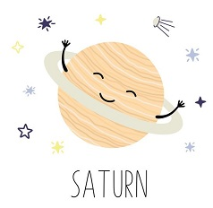
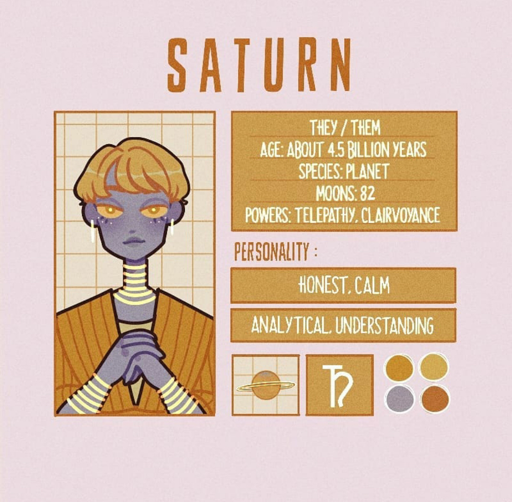

Всем привет!
Я Сатурн, планета-жемчужина.Многие астрономы считают меня, шестую от Солнца планету, самой красивой в Солнечной системе благодаря его удивительным кольцам. Я - самая дальняя планета, которую можно увидеть невооружённым глазом. Я вторая по размерам планета Солнечной системы, уступаю только Юпитеру, отстою от Солнца в 10 раз дальше, чем Земля.
Все планеты внешней области имеют кольца, но у меня они самые широкие. Кольца состоят из миллиардов мельчайших частиц льда с некоторой примесью камней. Хотя диаметр колец составляет 250 тыс. км, их толщина не достигает и километра. Происхождение колец науки пока неясно.
По предположениям астрономов у меня внутри есть ядро массой от 9 до 22 массы Земли, состоящее из металлов, силикатов и, возможно, льда. Вокруг ядра располагается слой металлического водорода в смеси с гелем. Моя атмосфера состоит в основном из водорода, с небольшой примесью гелия и других газов. В ней дуют мощнейшие ветры - до 500 м/с.
Известно уже более 60 моих спутников, и учёные продолжают открывать новые. Самый крупный мой спутник - Титан, это второй по размеру спутник в Солнечной системе, он больше Меркурия. И это единственный объект Солнечной системе, кроме Земли, на котором есть жидкая вода. Титан также единственный спутник в Солнечной системе, обладающий собственной плотной атмосферой.
Хотя я ненамного уступаю Юпитеру по размеру, я намного легче, и моя средняя плотность в 1,5 раза меньше плотности воды и в 8 раз меньше плотности Земли. Если представить гигантский бассейн, в котором планеты могли бы поместиться, я стал бы единственной планетой Солнечной системы, которая могла бы плавать.
Мой год длится 29,5 земных года, а вокруг своей оси я делаю полный оборот за 10 земных часов и 34 минуты. Я излучаю в космос в 2,5 раза больше энергии, чем получаю от Солнца.
Сатурн
- Пол: Женский
- Возраст: 4.5 биллионов лет
- Спутник: Есть (82 шт.)
- Способности: Телепатия, ясновидение
- Качества: Спокойная, понимающая, честная, интеллектуальная
- Любимые цвета: Тёплые оттенки
